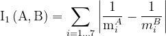
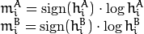
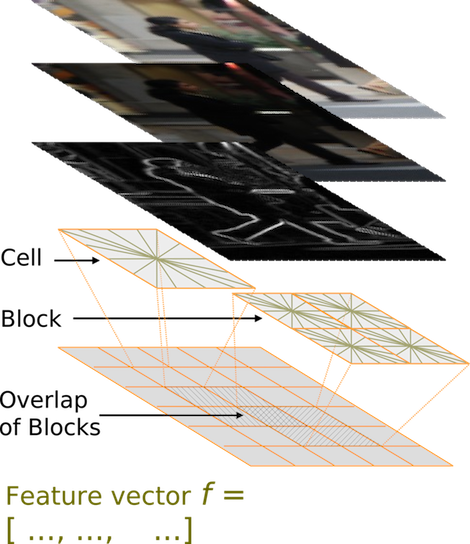
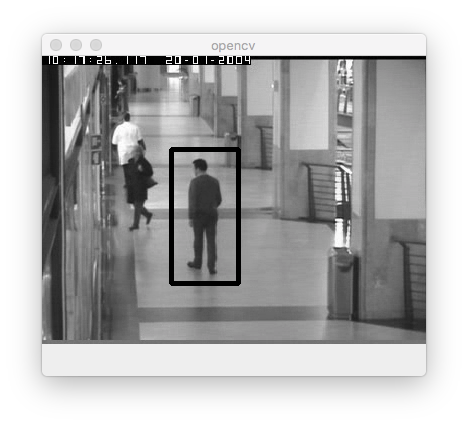
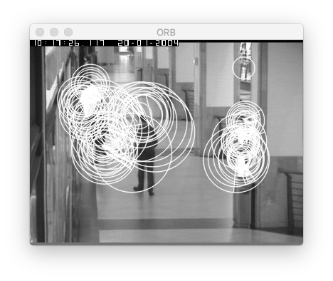
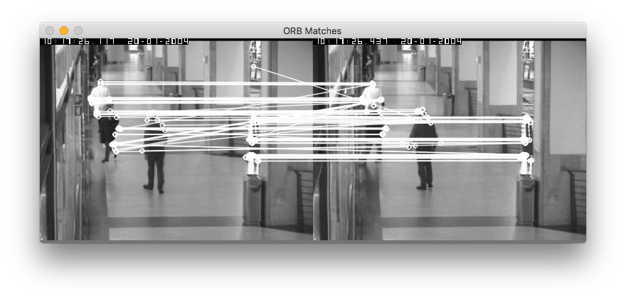

T6- Características de imagen¶
En este tema aprenderemos a detectar y extraer características útiles que describen una imagen.
Descriptores de contorno¶
Comenzaremos viendo las características que se usan para describir contornos. Estas características asumen que la imagen se ha binarizado previamente y tenemos el contorno de los objetos que queremos reconocer.
Momentos¶
Una vez hemos extraido los contornos de una imagen, por ejemplo mediante la función findContours, podemos calcular sus momentos usando la función moments:
1 2 3 4 5 | // Extraemos los momentos para cada contorno vector<Moments> momentos(contours.size()); for(int i = 0; i < contours.size(); i++) { momentos[i] = moments(contours[i], false); } |
La función moments calcula todos los momentos del contorno. Para acceder a un momento determinado podemos indicar, por ejemplo: momentos[i].m00. Estos son todos los momentos que devuelve la función:
1 2 3 4 5 6 | // Momentos espaciales double m00, m10, m01, m20, m11, m02, m30, m21, m12, m03; // Momentos centrales double mu20, mu11, mu02, mu30, mu21, mu12, mu03; // Momentos centrales normalizados double nu20, nu11, nu02, nu30, nu21, nu12, nu03; |
Como ves, no todos los momentos se calculan. Por ejemplo, como el momento mu00 es igual a m00, OpenCV no lo extrae.
Si quieres conocer más detalles sobre la función moments puedes consultar este enlace.
Momentos de Hu¶
Los 7 momentos de Hu se calculan con la función HuMoments a partir de los momentos centrales normalizados extraídos previamente con moments. Por ejemplo:
1 2 3 | Moments momentos = moments(contours[0]); double hu[7]; HuMoments(momentos, hu); // El array hu contiene los 7 momentos. |
La función matchShapes de OpenCV usa internamente estos momentos de Hu para comparar contornos, como veremos más adelante.
Cadenas Freeman¶
En OpenCV2 se usaba la función approxChains para extraer códigos de cadena, pero en OpenCV3 se ha eliminado esta funcionalidad por falta de demanda.
Descriptor Shape Context (SC)¶
Para extraer y comparar contornos con Shape Context podemos usar el siguiente código:
1 2 3 4 5 | // Creamos una instancia de este descriptor Ptr <ShapeContextDistanceExtractor> mysc = createShapeContextDistanceExtractor(); // Lo aplicamos a los vectores de puntos de dos imágenes para obtener su distancia. float dis = mysc->computeDistance(pointsQuery, pointsRef); |
En este ejemplo pointsQuery y pointsRef son vectores de puntos aleatorios del contorno de cada una de las imágenes que queremos comparar.
Ejercicio¶
En este ejercicio extraeremos una serie de descriptores de contorno a partir de imágenes binarizadas. El objetivo es encontrar las imágenes más similares a una imagen de referencia (a la que llamaremos query).
Se pide completar el siguiente código implementando los comentarios marcados con TODO. Crea el programa con el nombre contourDescriptors.cpp.
1 2 3 4 5 6 7 8 9 10 11 12 13 14 15 16 17 18 19 20 21 22 23 24 25 26 27 28 29 30 31 32 33 34 35 36 37 38 39 40 41 42 43 44 45 46 47 48 49 50 51 52 53 54 55 56 57 58 59 60 61 62 63 64 65 66 67 68 69 70 71 72 73 74 75 76 77 78 79 80 81 82 83 84 85 86 87 88 89 90 91 92 93 94 95 96 97 98 99 100 101 102 103 104 105 106 107 108 109 110 111 112 113 114 115 116 117 118 | #include <opencv2/opencv.hpp> #include <iostream> using namespace std; using namespace cv; struct Descriptors { vector<Point> SC; float perimetro, compactacion, elongacion, rectangularidad, areaCierreConvexo; Point centroide; float orientacion; double Hu[7]; }; // Funcion que recibe los contornos de una imagen y extrae de ellos n puntos al azar para calcular SC vector<Point> SCPoints(const vector<vector<Point> > &contours, int n=300) { // Cada contorno dentro de contours es un vector de puntos. Sacamos todos los puntos del contorno y los guardamos en allPointsFromImage vector<Point> allPointsFromImage; for (unsigned j=0; j<contours.size(); j++) for (int k=0; k< contours[j].size(); k++) allPointsFromImage.push_back(contours[j][k]); // "Barajamos" los puntos aleatoriamente, y nos quedamos como maximo con n=300 para usarlos con SC random_shuffle(allPointsFromImage.begin(), allPointsFromImage.end()); vector<Point> points; for (int i=0; i<n && i<allPointsFromImage.size(); i++) points.push_back(allPointsFromImage[i]); return points; } Descriptors extractDescriptors(const Mat &image) { Descriptors imgDescriptors; // Calculamos todos los contornos de la imagen vector<vector<Point> > contours; findContours(image, contours, RETR_LIST, CHAIN_APPROX_NONE); // Extraemos puntos aleatorios de estos contornos para SC y los guardamos en el descriptor imgDescriptors.SC = SCPoints(contours); // TODO: Extraemos el mayor contorno de la imagen (para esto puedes usar la función contourArea), y de este contorno calculamos y guardamos en el descriptor: // - Perimetro // - Compactacion // - Elongacion (usando caja de Feret) // - Rectangularidad (usando Menor Rectángulo Envolvente, MRE) // - Area del cierre convexo (pista: funcion convexHull) // - Centroide (X,Y) y orientacion (usando los momentos) // - Momentos de Hu return imgDescriptors; } void calcularDistancias(const Descriptors &queryDescriptors, const Descriptors &imgDescriptors) { float dSC, dPer, dComp, dElong, dRect, dCierre, dCent, dOr, dHu; dSC = dPer = dComp = dElong = dRect = dCierre = dCent = dOr = dHu=0; // TODO: Calcular y devolver la distancia de: // - SC // - Perimetro // - Compactacion // - Elongacion // - Rectangularidad // - Area del cierre convexo // - Orientacion // - Centroide (distancia Euclidea entre los dos puntos con coordenadas u,v) // - Hu (formula explicada en los siguientes parrafos del libro) cout << " dSC = " << dSC << endl; cout << " dPer = " << dPer << endl; cout << " dComp = " << dComp << endl; cout << " dElong = " << dElong << endl; cout << " dRect = " << dRect << endl; cout << " dCierre = " << dCierre << endl; cout << " dCent = " << dCent << endl; cout << " dOr = " << dOr << endl; cout << " dHu = " << dHu << endl; } int main(int argc, char* argv[]) { // Procesamos parámetros de entrada string path = "shape_sample/"; int indexQuery = 5; if (argc==2) indexQuery = atoi(argv[1]); // Leemos imagen query stringstream queryName; queryName << path << indexQuery << ".png"; Mat query=imread(queryName.str(), IMREAD_GRAYSCALE); // Calculamos sus descriptores Descriptors queryDescriptors = extractDescriptors(query); // Para las otras imágenes, calculamos sus descriptores y los comparamos con los de la query for (int i=0; i<20; i++) { int imageIndex = i+1; if (imageIndex==indexQuery) continue; // Ignoramos esta imagen si es la misma que la de referencia // Leemos la imagen stringstream img; img << path << imageIndex << ".png"; Mat image=imread(img.str(), IMREAD_GRAYSCALE); // Extraemos sus descriptores y los comparamos con los de la query cout << "-----------" << endl; cout << "Imagen " << imageIndex << ":" << endl; Descriptors imgDescriptors = extractDescriptors(image); calcularDistancias(queryDescriptors,imgDescriptors); } return 0; } |
En este ejercicio necesitarás descargarte estas imágenes, que debes descomprimir en un directorio llamado shape_sample.
Para extraer los descriptores puedes usar algunas de estas funciones de OpenCV.
En el cálculo de la arcotangente (para la orientación) debes usar la función atan2 en lugar de atan, ya que esta última no calcula los valores en los cuatro cuadrantes.
Cuando vayamos a calcular la distancia entre dos números float, debemos usar el valor absoluto de su diferencia. En el caso del centroide (que es un punto con sus coordenadas u,v), deberemos calcular la distancia Euclídea entre los dos puntos.
Para calcular las distancias de los descriptores Hu debes usar las siguientes ecuaciones:

donde A y B son las dos imágenes a comparar, y m se define como:

En este caso, sign es el signo (-1 si es negativo, 1 si es positivo, 0 si es 0), y h son los momentos Hu número i. Sólo debe sumarse un momento i si sus componentes son mayores que un umbral 1.e-5. Es decir, si el valor absoluto del descriptor Hu número i es mayor de 1.e-5 en ambas imágenes (con que en una sea menor, no se considera). En C++, el logaritmo se calcula con la función log10, ya que si se usa log se calcula el neperiano (que no es el que necesitamos en este caso).
Este es el cálculo que hace internamente el método matchShapes de OpenCV (algoritmo CV_CONTOURS_MATCH_I1) para comparar contornos, pero en este ejercicio tienes que implementarlo a mano.
La salida del programa debe ser como la siguiente (si no indicamos ningún parámetro, por defecto se usa la imagen número 5):
1 2 3 4 5 6 7 8 9 10 11 12 13 14 15 16 17 18 19 20 21 22 23 24 25 26 27 28 29 30 31 32 33 34 35 36 37 38 39 40 41 42 43 44 45 46 47 48 49 50 51 52 53 54 55 56 57 | ----------- Imagen 1: dSC = 3.80077 dPer = 182.51 dComp = 0.00770215 dElong = 0.291582 dRect = 0.306735 dCierre = 8402 dCent = 16.0312 dOr = 0.0885252 dHu = 1.45363 ----------- Imagen 2: dSC = 12.0485 dPer = 46.1005 dComp = 0.0200697 dElong = 0.164082 dRect = 0.301422 dCierre = 4529 dCent = 40.4969 dOr = 0.300745 dHu = 1.36698 ----------- Imagen 3: dSC = 9721.32 dPer = 1556.14 dComp = 0.0214209 dElong = 0.18013 dRect = 0.0153487 dCierre = 110849 dCent = 258.258 dOr = 0.224014 dHu = 0.228529 ----------- Imagen 4: dSC = 16396.2 dPer = 1531.7 dComp = 0.0176636 dElong = 0.463282 dRect = 0.0691208 dCierre = 107572 dCent = 334.63 dOr = 0.349207 dHu = 1.65752 ----------- Imagen 6: dSC = 0.267693 dPer = 114.953 dComp = 0.00107794 dElong = 0.0877844 dRect = 0.00407889 dCierre = 5869.5 dCent = 37.1214 dOr = 0.113083 dHu = 0.184812 ----------- .... |
Si tienes OpenCV para Mac, hay un bug en el comparador de SC que hará que salgan valores muy altos para la variable
dSC. Si esto ocurre, prueba tu programa en Linux antes de la entrega.
Revisa los resultados probando con distintas imágenes, cuando menor sea la distancia más se parecerán. Evidentemente, algunos descriptores funcionarán mucho mejor que otros.
Textura¶
Los filtros de Gabor se implementan en OpenCV creando un kernel mediante la función getGaborKernel, y después convolucionándolo con filter2D como ocurre con cualquier otro filtro.
1 2 3 | double sigma = 1, theta = 0, lambda = 1.0, gm = 0.02, ps = 0; Mat kernel = getGaborKernel(Size(ksize,ksize), sigma, theta, lambda, gm, ps); filter2D(src_f, dest, CV_32F, kernel); |
Como puedes ver, un filtro de Gabor se puede construir con muchos parámetros, pero los principales son estos:
ksize: Tamaño del filtrosigma: Desviación típica de la envolvente gaussianatheta: Orientación de las bandas paralelas de la función Gaborlambda: Longitud de onda de la señal sinusoidal
HOG¶
En OpenCV podemos extraer el descriptor HOG mediante HOGDescriptor:
1 | HOGDescriptor hog(Size(32,16), Size(8,8), Size(4,4), Size(4,4), 9); |
La ayuda de OpenCV es bastante incompleta para este descriptor. Por simplificar, los parámetros principales del constructor (aunque hay más) son estos:
winSize: Tamaño de la ventanaSize: Tamaño del bloqueblockStride: Desplazamiento del bloquecellSize: Tamaño de la celda
También podemos crear un descriptor HOG con los valores que vienen por defecto:
1 2 | HogDescriptor hog; // Equivalente a: HOGDescriptor hog(Size(64,128), Size(16,16), Size(8,8), Size(8,8), 9); |

Es necesario saber que, a diferencia del algoritmo que hemos visto en teoría, en la implementación de OpenCV hay una ventana que va moviéndose por toda la imagen para calcular los descriptores HOG. Como podemos ver, el tamaño de la ventana por defecto es de 64x128 píxeles, lo cual significa que los objetos a detectar deben tener al menos ese tamaño. Si trabajamos con resoluciones menores, deberemos cambiarlo.
La longitud por defecto del vector HOG (que podemos ver usando el método hog.getDescriptorSize) es de 3.780 elementos por cada descriptor. El método features.size devuelve el tamaño del descriptor HOG para toda la imagen (el descriptor global).
Una vez creado el descriptor podemos aplicarlo a una imagen:
1 2 3 | vector<float> descriptorsValues; vector<Point> locations; d.compute(img_gray, descriptorsValues, Size(0,0), Size(0,0), locations); |
La función compute devuelve en locations los puntos donde se han encontrado las personas, y en descriptorsValues los valores del descriptor para cada punto. Para calcular esto se usa un sistema de detección de peatones, que veremos en el tema 7.
Si en lugar de extraer el descriptor queremos directamente hacer la detección de personas en una imagen (que es lo normal), se puede usar directamente este código:
1 2 3 4 5 6 | // La siguiente instrucción inicializa un detector de personas. // No hemos visto este detector en teoría porque está basado en aprendizaje automático (algo que veremos más adelante), pero sí que hemos visto el descriptor. hog.setSVMDetector(HOGDescriptor::getDefaultPeopleDetector()); // Aplicamos el detector sobre la imagen hog.detectMultiScale(img, found, 0, Size(8,8), Size(32,32), 1.05, 2); |
Desafortunadamente no hay ninguna forma sencilla de visualizar el descriptor HOG en OpenCV con sus gradientes, pero si tienes curiosidad puedes consultar este otro enlace.
Ejercicio¶
Descarga el siguiente fichero que contiene imágenes de peatones y sus correspondientes bounding boxes en XML. Las imágenes originales están descargadas de esta web.
Implementa un programa llamado hog.cpp que reciba una imagen por parámetro. El programa debe mostrar por pantalla una imagen que contiene los bounding boxes (en negro) de los peatones detectados, e imprimir también por pantalla el resultado de la detección con el formato de los XML del siguiente ejemplo.
Dada esta llamada:
1 | $./hog USCPedestrianSetB/OSE1cor_1.bmp salida.jpg |
El programa debería imprimir por pantalla algo parecido a esto:
1 2 3 4 5 6 | <?xml version="1.0"?> <ObjectList> <Object> <Rect x="129" y="93" width="67" height="134"/> </Object> </ObjectList> |
Finalmente, también debe guardarse la imagen resultante en el fichero con el nombre recibido como segundo parámetro:

Para realizar este ejercicio puedes usar como base este código, que implementa un ejemplo completo de detección HOG sobre vídeo (tendrás que adaptarlo para que lea una sola imagen).
Características locales¶
Las características locales son fáciles de obtener en OpenCV, ya que esta librería implementa todo lo necesario para detectar keypoints y extraer sus correspondientes descriptores.
Detector¶
Ejemplo de detección usando MSER:
1 2 3 4 5 6 7 8 9 10 11 12 13 14 15 16 17 18 19 20 21 22 23 24 25 26 27 28 29 30 31 32 33 34 35 36 37 | #include <iostream> #include <opencv2/opencv.hpp> using namespace std; using namespace cv; int main(int argc, char* argv[]) { if( argc != 2 ) { cout << " Syntax: ." << argv[0] << " <image>" << endl; return -1; } Mat img = imread(argv[1], IMREAD_GRAYSCALE); if (!img.data){ cout << "Error leyendo imagen " << argv[1] << endl; return -1; } // Detectamos los keypoints usando MSER. Los guardamos en el vector keypoints Ptr<FeatureDetector> detector = MSER::create(); vector<KeyPoint> keypoints; detector->detect(img, keypoints); // Dibujamos los keypoints en la imagen Mat img_keypoints; drawKeypoints(img, keypoints, img_keypoints, Scalar::all(-1), DrawMatchesFlags::DEFAULT); // Mostramos la imagen con los keypoints imshow("Keypoints", img_keypoints); waitKey(0); return 0; } |
Descriptor¶
Veamos otro ejemplo, esta vez usando ORB como detector y también como descriptor. En este código, además comparamos los descriptores binarios usando una distancia Hamming. Las correspondencias que devuelve match en la variable matches son las parejas de puntos más similares entre la primera y la segunda imagen.
1 2 3 4 5 6 7 8 9 10 11 12 13 14 15 16 17 18 19 20 21 22 23 24 25 26 27 28 29 30 31 32 33 34 35 36 37 38 39 40 41 42 43 44 45 46 47 48 49 50 51 52 53 54 55 56 57 58 59 60 | #include <iostream> #include <vector> #include <opencv2/opencv.hpp> using namespace cv; using namespace std; int main(int argc, char *argv[]) { if (argc!=3) { cout << "Syntax: " << argv[0] << " <image1> <image2>" << endl; exit(-1); } // Leemos las imagenes Mat image1 = imread(argv[1], IMREAD_GRAYSCALE); Mat image2 = imread(argv[2], IMREAD_GRAYSCALE); // Creamos el detector ORB con 100 puntos como maximo Ptr<FeatureDetector> detector = ORB::create(100); // Usamos ORB para detectar los keypoints vector<KeyPoint> keypoints1, keypoints2; detector->detect(image1,keypoints1); detector->detect(image2,keypoints2); // Dibujamos los keypoints de la imagen1 Mat featImage; drawKeypoints(image1, keypoints1, featImage, Scalar(255,255,255), DrawMatchesFlags::DRAW_RICH_KEYPOINTS); namedWindow("ORB"); imshow("ORB",featImage); // Ademas del detector, ORB incluye el descriptor, que aplicamos a continuacion Ptr<DescriptorExtractor> descriptor = detector; Mat descriptors1, descriptors2; descriptor->compute(image1, keypoints1, descriptors1); descriptor->compute(image2, keypoints2, descriptors2); // En este punto hacemos matching (mirar los keypoints coincidentes en ambas imagenes). Creamos el matcher. BFMatcher matcher(NORM_HAMMING); // Al ser un descriptor binario, debemos usar la distancia de Hamming // Lo aplicamos a los descriptores para obtener el vector matches. vector<DMatch> matches; matcher.match(descriptors1, descriptors2, matches); // Dibujamos los matches Mat imageMatches; drawMatches(image1, keypoints1, image2, keypoints2, matches, imageMatches, // Imagen donde guardamos el resultado Scalar(255,255,255), // color de las lineas Scalar(255,255,255)); // color de los puntos // Mostramos el resultado namedWindow("ORB Matches"); imshow("ORB Matches", imageMatches); cout << "Numero de matches: " << matches.size() << endl; waitKey(); return 0; } |
Resultado de ejecución:
1 | ./binary USCPedestrianSetB/OSE1cor_1.bmp USCPedestrianSetB/OSE1cor_2.bmp |


Como puedes ver, usamos Ptr<FeatureDetector> para crear un detector, y a continuación la función detect para realizar la detección. Análogamente, podemos usar Ptr<DescriptorExtractor> para crear un descriptor, seguido de una llamada a compute para calcularlo.
Puedes consultar en la ayuda todos los detectores y descriptores que implementa OpenCV.
Además de estos, podemos usar otros detectores o descriptores externos como SURF. Tanto SIFT como SURF están patentados, por lo que para usarlos necesitamos importar el módulo opencv_contrib/xfeatures2d y aceptar su licencia.
Descriptores neuronales¶
Como hemos visto en teoría, también podemos usar una red neuronal convolucional (CNN) para extraer una representación vectorial de una imagen.
Para ver cómo funciona una red neuronal de la librería Caffe (una de las muchas librerías de redes) en OpenCV se puede consultar este código de ejemplo.
Para poder usarlo, también necesitamos descargar los pesos de la red neuronal.
Si compilamos caffe_googlenet.cpp y lo ejecutamos, se cargará una red de tipo GoogleNet ya entrenada con millones de imágenes de ImageNet. Dada una nueva imagen de entrada, esta se rescala y se proporciona a la red neuronal que predice la clase de dicha imagen.
Las clases que pueden obtenerse son sólo aquellas para las que se ha entrenado la red, que pueden consultarse en el fichero synset_words.txt.
Sin embargo, también podemos usar la red como extractor de características. Para ello, en lugar de usar la última capa (la que realiza la clasificación), debemos quedarnos con los valores de la penúltima capa, que en este caso se llama pool5/7x7_s1.
Por tanto, podemos remplazar la instrucción:
1 | prob = net.forward("prob"); |
por:
1 | Mat neuralCodes = net.forward("pool5/7x7_s1"); |
Después hay que convertir la matriz neuralCodes a un vector de float (por ejemplo usando la siguiente función), y ya tendremos nuestro descriptor neuronal que podemos usar como entrada a otro sistema de aprendizaje automático como kNN o SVM.
1 2 3 4 5 6 7 | vector<float> matToFloatVector(Mat matToConvert) { vector<float> convert; convert.assign((float*)matToConvert.datastart, (float*)matToConvert.dataend); return convert; } |